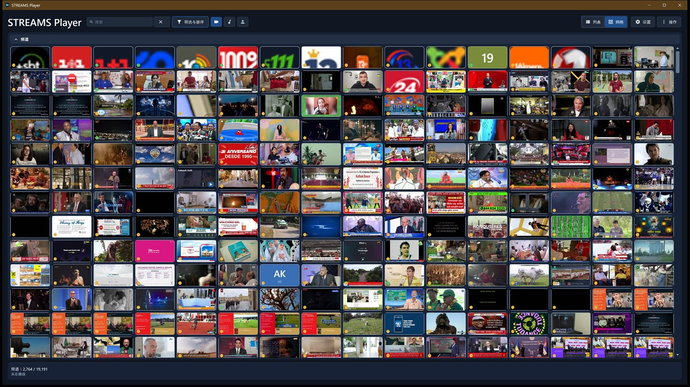

01找到频道
- 精选目录，另附一份内置副本，首次启动时无需联网即可应用。目录没有给出图标的频道也有自己的样子 - 取自名称的首字母和配色，已知国家/地区时还带上其代码。
- 按类别、主题、语言、国家/地区和媒体类型筛选 - 需要时再展开该行。
- 搜索始终位于标题行。
- 把常回访的频道置顶。
- 从整份目录中随机播放一个电台 - 若它始终无声，应用会自动换下一个。
一款专注的 Windows 桌面应用：浏览现成的精选目录，添加自己的流，然后播放 - 无需账户，没有广告，也不会有您没有要求的后台活动。

STREAMS Player 是一款独立的 Windows 桌面应用，用于网络广播、直播视频和 RTSP 网络摄像头。它会读取一份公开的精选流目录，因此首次运行就能得到一份可用的频道列表 - 之后您可以搜索、排序、置顶，也可以添加自己的频道，全部保存在您自己的机器上。
它追求的是安静：播放器只做播放器该做的事。目录只在您要求时才更新，您手动添加和导入的流绝不会被更新覆盖，也没有账户、广告、分析统计或作者运营的服务。您的电脑上运行的，只有您自己启动的东西。
找到、保留并播放一个流所需的一切 - 按您实际在做的事分组。
%LOCALAPPDATA%\StreamsPlayer。打开它，选一个频道 - 整个流程就是这样。可用安装程序，或从 Microsoft Store、winget 或便携版 ZIP 安装，也可以从源代码运行；还可以直接从命令行启动一个流。
装好 .NET 10 SDK 后，在仓库根目录还原、生成并启动。
./build.ps1 -Run浏览目录，筛选或搜索，然后选择一个频道。广播在主窗口开始播放；视频和 RTSP 在播放器窗口中打开。普通启动不会播放任何内容；在设置中开启「启动时继续播放」，启动便会恢复上次关闭时正在播放的内容。
不碰目录也能播放一个流。
StreamsPlayer.exe --url "https://example.test/live"打开已保存频道的三点菜单，使用“复制启动命令”或“创建桌面快捷方式”。两者都使用该频道保存的 id。
StreamsPlayer.exe --id "channel-guid"从“操作”菜单打开“工具”，点击“向作者发送日志”。应用会把最近十次启动的诊断日志，连同您的版本、Windows 版本和设置的简要说明一起打包到已保存文件文件夹（默认“下载”），然后打开已写好邮件的邮件程序。确认窗口会显示完整路径，并可按您的要求打开该文件夹；由您自己附加压缩包并点击“发送”。
四种获取方式都已可用。可运行 GitHub 上最新发布页里的安装程序，从 Microsoft Store 获取，下载便携版 ZIP，或使用 winget install SerZhyAle.StreamsPlayer 安装。
安装程序就是文件名以 -windows-x64-setup.exe 结尾的那个文件。它只为当前用户安装，从不索取管理员权限；卸载它也不会影响您的频道、置顶和播放记录。它没有签名，因此首次运行时 Windows 会发出警告；每次发布都会在每个下载文件旁附上一个 .sha256 文件，您可以据此核对拿到的东西就是发布出来的东西。